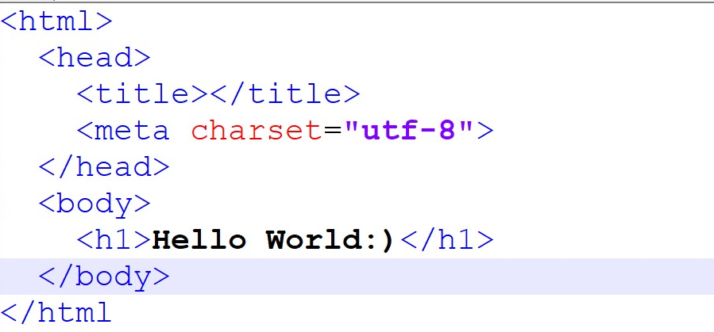
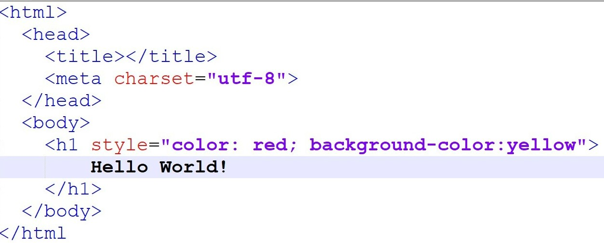
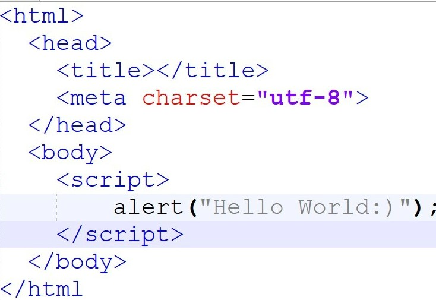

Frontend dilləri
HTML
Frontend üçün fundemental dildir. Veb brouzerlər bu dil sayəsində işləyirlər. HTML brouzerlərdə displaydə əks olunur.
CSS
HTML dilini müşayiət edir. CSS veb saytlarda stilləri dəyişdirmək üçün (rəngləndirmə, responsiv dizayn və s.) üçün istidadə olunur. Hansı ki rəngləri , fontları dəyişməkdə kömək edir.
Javascript
Menyular, modal pəncərələr və kontakt formaları kimi daha interaktiv elementlər üçün istifadə olunan proqramlaşdırma dilidir.
Html Code
Hello World:) 
Css Code
Red Hello World:) 
Js Code
This page says Hello World:) 
HTML (ing. Hypertext Markup Language) — brauzerin oxuya biləcəyi hər hansı sənədi və ya səhifəni yaratmaq üçün xüsusi hipermətn dilidir. HTML internetin fundamental baza texnologiyasıdır və veb-səhifənin növünü, funksiyasını təyin edən diskriptorlar əsasında yaradılmış dildir. Bütün veb-qovşaqlarda toplanmış və internetə qoşulmuş kompüterlərin ekranlarında göstərilən sənədlər HTML proqram kodunda yazılırlar. HTML – səhifələrdə mətn bloklarının, təsvirlərin yerləşdirilməsinə, cədvəllərin qurulmasına, sənədin və sənəddəki mətnin rənglərinin seçilməsinə, multimediya elementlərinin əlavə edilməsinə, hiperistinadların və bütün bu elementlər arasında əlaqələrin yaradılmasına imkan verir. Hipermətn koduna malik olan fayllar (.htm) və (.html) genişləndirməsi ilə göstərilir. 2004-cü ildə HTML-in yeni versiyası HTML5-in yaradılmasına başlandı və 2014-cü il 28 Oktyabrda tamamlandı və standardlaşdırıldı.

CSS (ing. Cascading Style Sheets) — sənədin xarici görünüşünün, işarələmə dilinin istifadəsi ilə yazılmış, formal təsvir dili. Adətən HTML və XHTML işarələmə dillərində yazılmış veb-səhifələrin təsviri və tərtibatı üçün istifadə edilir, lakin istənilən digər XML sənədlərə, məsələn, SVG və ya XUL-a da tətbiq edilə bilər. HTML sənədlərini yaradarkən veb-dizaynerlər müxtəlif mürəkkəb məsələlərlə qarşılaşırlar:

JavaScript – internet səhifələrin yaradılmasında geniş istifadə olunan proqramlaşdırma dilidir. JavaScript müxtəlif dilllərdən ilhamlanaraq yaradılmışdır. 1995-ci ilə Brendan Eyx tərəfindən yazılmışdır. JavaScript Obyekt Yönümlü Proqramlaşdırma (OYP) dilidir. Obyektə Yönümlü Proqramlaşdırma mövzusu kifayət qədər mürəkkəb proqramlaşdırmadır. JavaScript Netscape Navigator 2.0 ilə birlikdə Brendan Eich tərəfindən inkişaf etdirilən və əvvəllər Mocha sonralar LiveScript olaraq adlandırılan və sonda bu anki adını alan JavaScript dili başlanğıcda sadəcə müştəri tərəfindən (client-side) şərh edilən bir proqramlaşdırma dilidir. Günümüzdə NodeJS texnologiyası ilə server tərəfli də (server-side) şərh edilən proqramlama dili halına gəldi. JavaScript - HTML səhifəyə inteqrasiya olunaraq, bu səhifə ilə istifadəçi arasındakı interfeysə əlavə funksional imkanlar verən alqoritmik dildir.

Bootstrap - veb səhifələri və tətbiqetmələri yaratmaq üçün istifadə olunan açıq mənbə alətidir və HTML və
CSS vasitəsiylə yazı növləri, formlar, düymələr, navigasiya və başqa komponentlər üçün istifadə olunan
xüsusi dizayn qəliblərindən ibarətdir. Əsas hədəf dinamik veb səhifələri, veb tətbiqetmələri yaratmaq və
onların inkişafını sadələşdirməkdir.
Jquery - 2006-cı ildə Con Reziq tərəfindən istifadəyə buraxılmışdır. Hal-hazırda Dave Methvin rəhbərlik
etdiyi komanda tərəfindən inkişaf etdirilir. jQuery JavaScript kitabxanaları arasında ən çox istifadə
olunan kitabxanadır. 10,000 ən çox ziyarət edilən saytın 55%-də jQuery istifadə edilib.
JQuery kitabxanası, tapşırıqların maksimum geniş mühiti üçün faydalı funksionallığı mövcuddur.

Komanda üzvləri
Mən Aydan Şahalıyeva 20 yaşım var. 2019-cu ildə İsmayıllı şəhər 5 saylı tam orta məktəbini fərqlənmə attestatı ilə bitirib Azərbaycan Dövlət Neft və Sənaye Universitetibə qəbul olmuşam. Hal-hazırda Kompüter mühəndisliyi ixtisasında 3-cü kursda təhsil alıram. Full Stack proqramçı olmaq üçün çalışıram. Frontend proqramlaşdırma üzrə təlimlər keçirəm.

Mən Aysel Abdullayeva, 20 yaşım var. 128 nömrəli tam orta məktəbi bitirmişəm. Hazırda Xəzər universitetinin 3 cü kurs tələbəsiyəm. Riyaziyyat və informatika müəllimliyini oxuyuram.